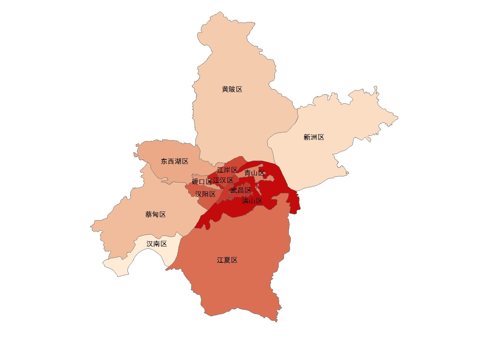

返回

区域美食热度分析
为了清楚的对每个区的美食情况进行比较，我们综合了各个区的饭店数量与每个商家的评论数量两个因素，计算出了每个区的美食指数，并根据该指数绘制出了如图所示的美食热度图。颜色越深，代表该地区的美食指数越大，相应的饭店数量就越多并且在该地区消费的人数也越多，从图中可以看出，结合了两个因素后的热度排名前三是洪山区，江汉区和武昌区。
价格对比分析
一个地区的美食价格水平，可以一定程度上反映出该地区的居民消费情况，区域地价和工资水平。在剔除了数据中人均价格为零的商家后（无效数据），我们绘制出了武汉各个区美食平均价格的柱状图，从图中可以看出江岸区平均价格最高，江汉区次之，武昌区第三。
本站内容来自互联网，如有侵权请联系站长删除！